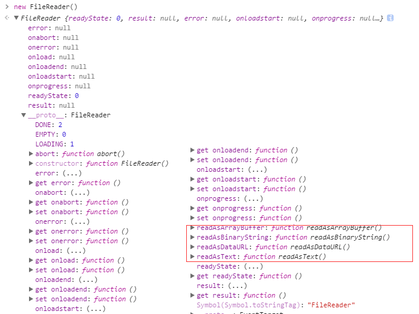

不知为什么，写着写着，心里静的自己都怕
上一篇简单说了下ajax文件上功能。只是针对这一h5技术做了简单试用，没有做必要的体验优化。在我们做上传功能时，经常会有测试或者产品说，你这上传功能体验好差，等在那里半天才看到图片，每当听到这样的抱怨的时候，心理苦的不知道说啥。这要是搁在以前，或许我还可以把这个锅甩给服务端的同学（谁叫你们响应的这么慢，你看看，这都快要年底了，图片还看不到。），但是，现在已经是所谓的h5时代了，这锅还得自己背。下面就来说说为什么这锅要前端来背。
众所周知，h5带来了好多新的前端技术，例如那什么，是在说不出来，自己体会吧。其中就有一个叫FileReader的东西，它的功能基本通过名字可以看得出来（起一个好名字就是这么重要），通过它可以获得文件句柄，然后利用文件句柄来把文件读入内存，并且读取文件中的数据，有异步和同步两种，总有一款适合你。当然它还拥有相当一部分方法，来达到整个操作流程。有点走远了，还是先回到怎样优化我们图片上传功能吧。
由于FileReader对象可以读取本地文件，那么我们就可以直接先把图片读取到页面，直接展示，这样就可以使图片在不用上传的情况下直接展示在页面中，用户在选中图片后，立马显示出来，体验好感蹭蹭的往上涨。现在就涉及到怎么读取到页面中，方法如下：
var reader = new FileReader();
reader.onload = function(evt){
console.log(evt.target.result);//evt.target.result为都区完成的数据
}
reader.readAsDataURL(file);//file参数其中一种就是input中的文件对象。
就这么简单的几行代码，就可以实现文件读取操作，上面用到了FileReader的readAsDataURL方法，此方法会把文件读取为base64格式数据（跟canvas的toDataURL方法获得是一抹一样的数据），然后，你可以直接赋值给img的src属性，这样就可以不用等待服务端返回图片地址，等待图片加载。可参考Demo当然FileReader还有其他的方法如下图：

途中红色区域就是读取时的类型设置。其他功能看字面意思体会，都似曾相识。
另外，可以及时显示图片还有另外一种方法window.URL.createObjectURL(blob || file),此方法会根据传入的参数创建一个指向该参数对象的URL，这个URL的生命仅存在于它被创建的这个文档里，新的对象URL指向执行的File对象或者是Blob对象，然后就可以通过这个URL来展示图片。
在这个时候，我们又要怀念一下IE了，以前都说IE怎么怎么不行，这次真不敢这样说，IE6就开始支持显示本地路径的图片，后面的版本通过Microsoft.AlphaImageLoader滤镜也可以实现此方法（IE8貌似也支持本地路径显示），滤镜的具体方法我就不写了，可以自行网上查资料了解。
另外再提一点，既然我们把数据读出来了，那么理论上配合前一篇提到的ajax方法和FormData就可以直接把当前获得base64数据上传了，通过FormData的append方法实现。服务端进行相应的解析（没试过，之前只知道通过二进制形式上传，不过据说可以）。本篇文章就到这，以上都是个人粗浅的认识以及蹩脚的解决方案，如果有讲错或者没讲清楚的地方，欢迎留言交流